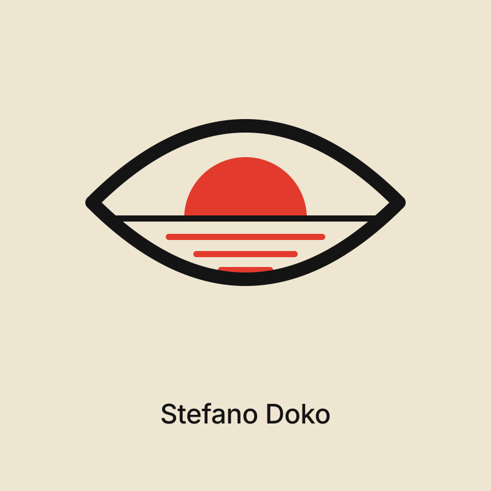
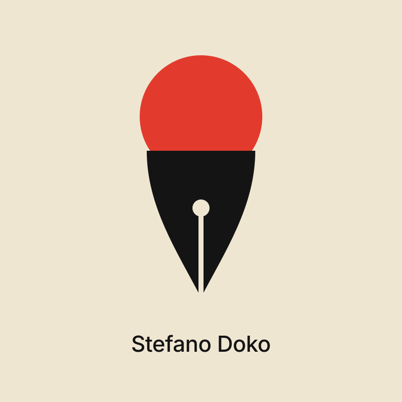
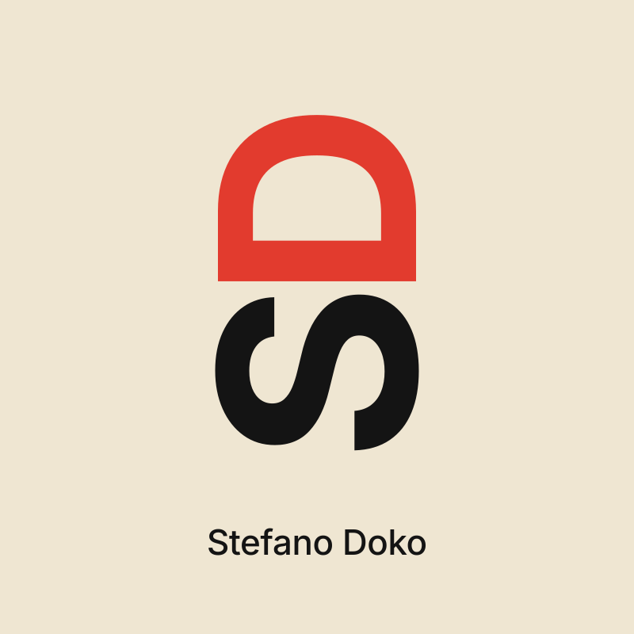
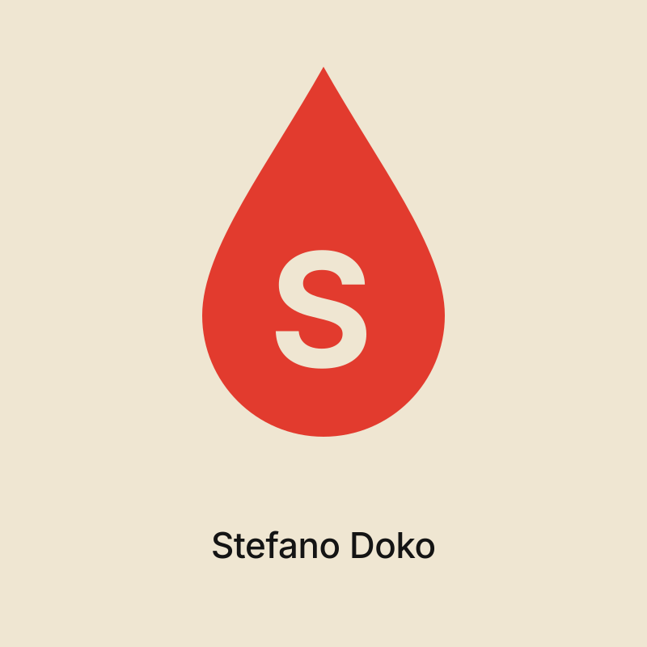
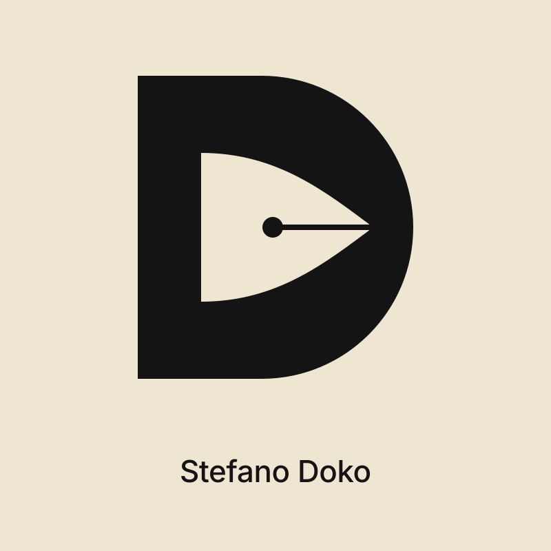
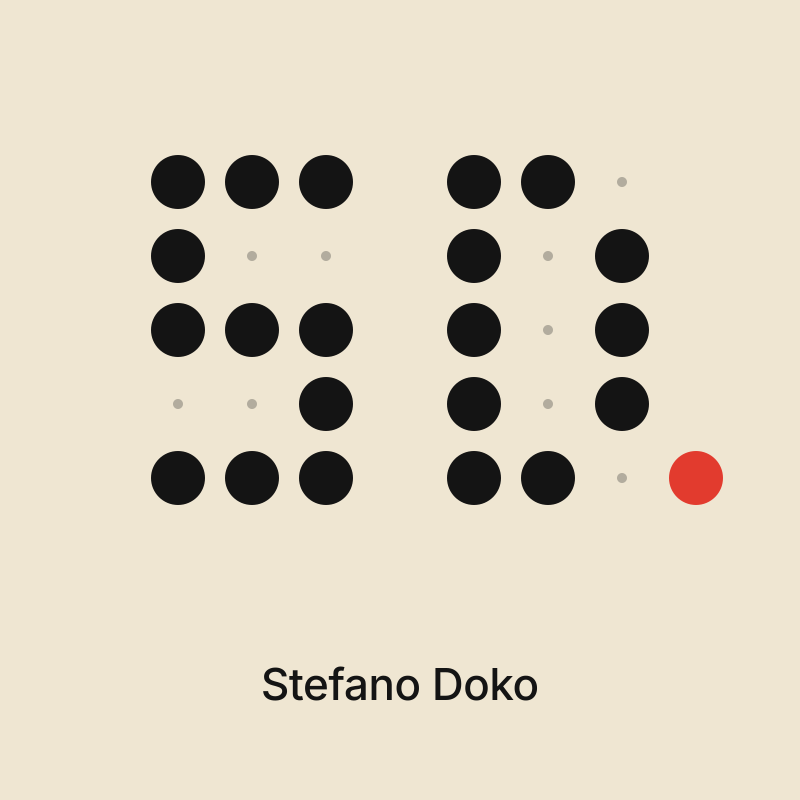
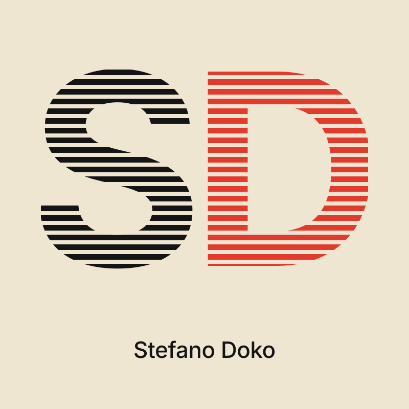

Stefano Dokov8 · eight marks, one idea eachAlbania
Noma Bar

Sunset eye An eye whose iris is the sun going down on the sea: how a designer sees the coast.
Nib cone A fountain-pen nib that is also an ice-cream cone: the tool, and a client’s ice cream.Shigeo Fukuda

Sideways SD turned on its side: the D is a sun setting on the S’s wave. Tilt your head to read it.
The drop The D turned and pinched into a drop of ink, with an S cut out of it.Lindon Leader
Inside A red D whose counter is an S: both initials, one shape.
Hidden nib A black D whose counter is a pen nib: the tool, hiding in the letter. Build

Dot grid SD on a dot grid, one dot red: the full stop.
Engraved SD cut in horizontal rules, like the engraved band on the site.